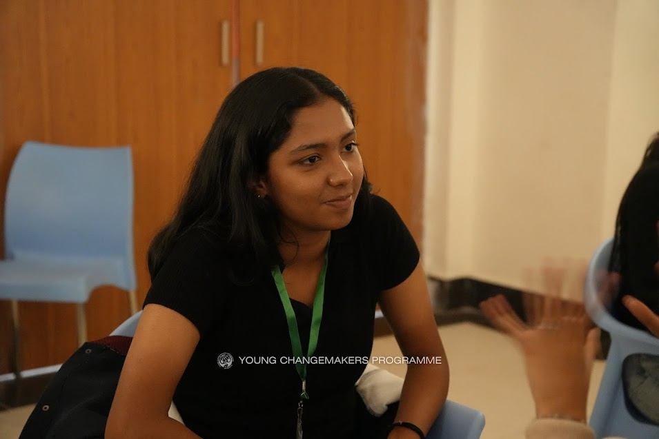
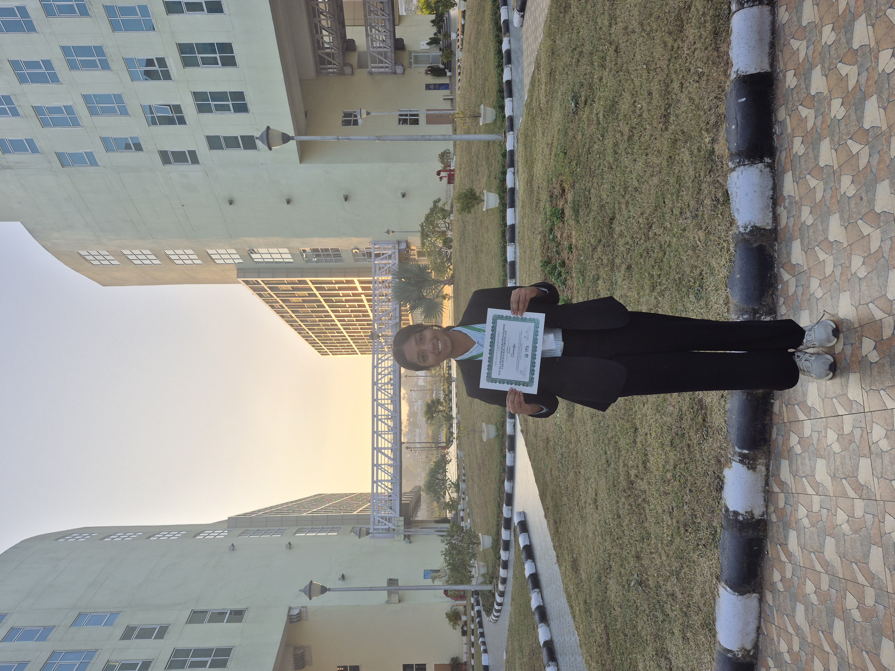
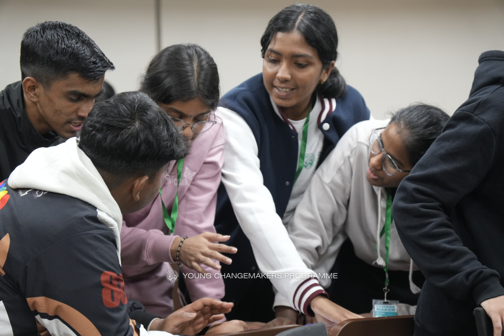

Secondary Education
Mount Litera Zee School, Goa
Class X · 2024
96.8%



ECONOMICS · ENTREPRENEURSHIP · SOCIAL IMPACT
Growing up, I was always a rebellious kid, and that led me to explore various activities such as sports, music and art.
I was also deeply interested in helping people. Combining this passion with my curious and unconventional nature led me towards becoming a changemaker.
Currently, I am pursuing Economics at Jesus and Mary College and Digital Business and Entrepreneurship at IIM Bangalore. Alongside this, I am a budding social entrepreneur exploring different challenges.
Class X · 2024
96.8%
Class XII · 2026
88.2%
Jul 2026 – Jul 2030
Sep 2026 – Sep 2029
Dec 2025
Nov 2025
Nov 2025
Aug 2025
June 2025
| Secured the highest academic score in Class XI (96.1%) in the school. |
| Winner of the TATA Essay Writing Competition (Class XI), competing against over 300 participants. |
| Secured 2nd Place in the Mount Litera Green Marathon (Class XI). |
| Achieved All India Rank 151 in the SRCC National Economics Olympiad among approximately 2840 participants. |
Chat about social change, entreprenuership and impact
Email me at aadyasasi@gmail.com